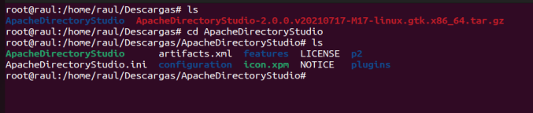
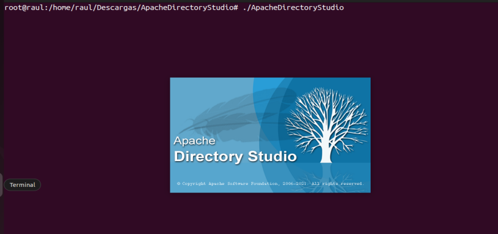
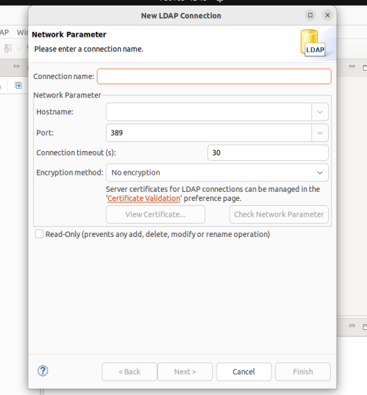
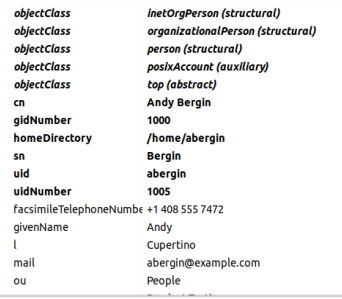
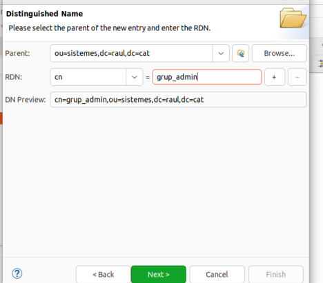
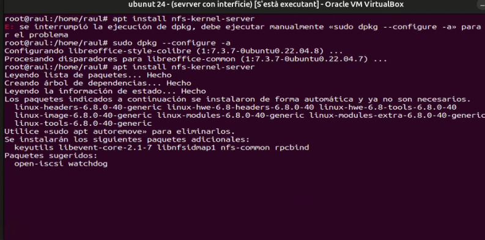
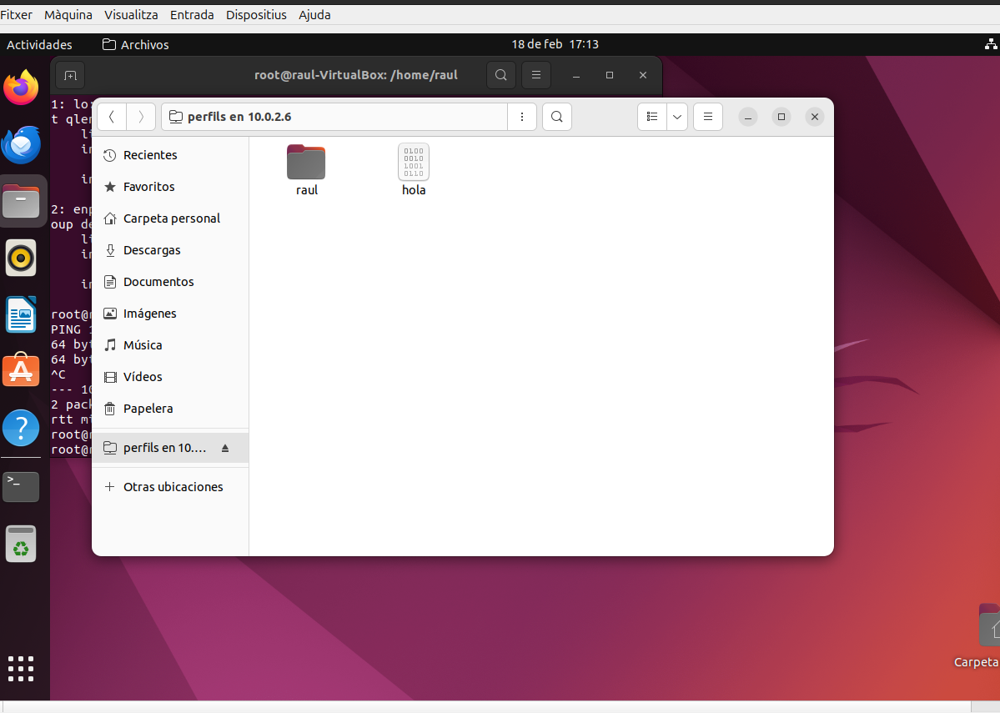
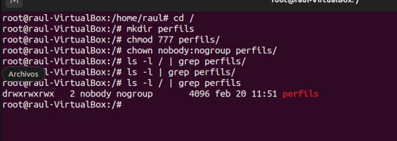

Gestió de Dominis i Accessos
La Gestió de Dominis i Accessos és el procés d’administrar els permisos i els drets d'accés dels usuaris a recursos i sistemes dins d’un domini, assegurant la seguretat i el control de la informació. Inclou la creació, modificació i eliminació d’usuaris, així com la definició de polítiques d'autorització.
També hem de saber que una Unitat Organitzativa (UO) és una estructura lògica per organitzar i gestionar usuaris, grups, recursos i permisos, sovint vinculada a dominis o serveis com LDAP. Aquesta agrupació facilita l'administració centralitzada i el control d'accés en entorns corporatius.
1. Instal·lació del domini LDAP
Primer de tot, el que caldran seran dues màquines virtuals amb Ubuntu Desktop. Una s'encarregarà de ser el servidor i l'altra actuarà com a client.
Una vegada tenim les dues màquines, configurem la xarxa de cada una en Xarxa NAT.
Per començar, anirem a la màquina virtual que farà com a Servidor, i mirarem la seva IP amb ip a:

La nostra IP en aquest cas serà 10.0.2.15 en el Servidor. A continuació, configurem la xarxa del nostre sistema de la següent manera:
Per comprovar la connexió, utilitzem la comanda ping amb el DNS que és 8.8.8.8:
Després de tot, anem al fitxer /etc/hosts on introduirem la nostra IP d'abans seguida del nostre host name i domini de la següent manera:
-
Instal·lació de Slapd
Fem ús de
apt install slapd ldap-utilsper instal·lar el paquet i primerament ens portarà a la següent finestra:En aquesta finestra hem d'introduir la contrasenya que ens permet entrar a slapd com a administrador. Li donem a Acceptar i en la següent finestra que ens surt confirmem la contrasenya introduïda:
Un altre cop donem a Acceptar i finalment, si tot va bé, tindrem la instal·lació finalitzada amb èxit.
Un cop fet el pas anterior, executem la comanda slapcat i ens mostrarà una sèrie d'informació que és tota aquella referent a LDAP, que s'utilitza per accedir i gestionar informació en serveis de directoris, com usuaris i recursos dins d'una xarxa.

Seguidament, hem de tenir una sèrie d'arxius que hem descarregat amb antelació. En aquest cas els tenim ja en un comprimit ZIP a la carpeta Descàrregues, així que anem i el descomprimim al directori de la següent manera:
Obtenim cinc fitxers dels quals un és el fitxer base, que en LDAP conté la configuració inicial d’un domini o directori. Es fa servir per inicialitzar la base de dades LDAP abans d'afegir-hi més dades. Es pot fer pel fitxer base o, com veurem a continuació, per comandes.
-
Configuració de Slapd
Ara configurem el servei LDAP amb la comanda
dpkg-reconfigure slapd:
Primer de tot s'obrirà una finestra on hem de seleccionar l'opció de NO per continuar amb la configuració.

Seguidament hem d'introduir el nom que havíem posat del nostre host amb el domini del DNS, en aquest cas serà
raul.cat, i donem a Acceptar.En una altra finestra ens demanen el Nom de l'organització que estem creant, i en aquest cas serà igual que abans:
raul.cat:En la següent finestra que ens sortirà ens demanaran la contrasenya de l'administrador per accedir al directori LDAP:
Confirmació de la contrasenya:
En la nova finestra que sortirà a continuació hem de donar a l'opció de SI:

I finalment, en l'última finestra hem de seleccionar l'opció de SI:
I ja tindríem creat el directori de LDAP amb totes les configuracions.

Ara tornem a utilitzar la comanda slapcat i veiem que respecte al d'abans ara s'han actualitzat els noms de l'organització i el domini.
Breument, la informació vol dir el següent:
dn: dc=hostname,dc=domini: Identificador únic de l'entrada LDAP.objectClass: top: Classe d'objecte bàsica per a totes les entrades.objectClass: domain: Indica que l'entrada és un domini LDAP.dc: exemple: Component del domini (exemple) dins de l'arbre LDAP.
Configuració dels fitxers .ldif
En aquest moment anirem configurant els fitxers que havíem descarregat abans. Aquests fitxers es troben al directori Descàrregues i contenen la configuració inicial d’un domini o directori del LDAP.
-
Fitxer uo.ldif
Aquest fitxer inclou una entrada per definir la UO (ou=Users) i una altra per cada usuari amb atributs. Això s'utilitza per gestionar estructures i comptes del servidor LDAP.
- En el apartat de
dcposem el nom del host, i endcposem el domini. ouseria la Unitat Organitzativa

- En el apartat de
-
Fitxer grup.ldif
El fitxer grup.ldif és un fitxer en format LDIF utilitzat per definir i gestionar grups dins d'un directori LDAP. Aquest fitxer pot contenir les definicions de grups, incloent-hi els seus noms, membres i altres atributs relacionats.
PosixAccountrepresenta comptes d'usuari i es fa servir per a la informació d'usuaris individuals.PosixGrouprepresenta grups d'usuaris, amb atributs comcn,gidNumberimemberUidper definir els membres del grup. S'utilitza per agrupar usuaris en un mateix grup. Els usuaris poden estar associats a un grup a través delgidNumberi els membres de cada grup es llisten ambmemberUid.
Igual que en el fitxer anterior, posarem el nostre host corresponent i el domini. També posarem el nom del
memberUidque seràalu1: -
Fitxer usu.ldif
Finalment, editarem el fitxer usu.ldif que s'utilitza per definir un compte d'usuari en un directori LDAP, incloent-hi atributs com
uid,homeDirectory,userPasswordi altres informació relacionada amb el compte.El que s'ha de canviar és el host i el domini pel nostre. I si es vol, es pot canviar la contrasenya en
userPassword:
Una vegada hem editat tots els fitxers anteriors, hem d'executar la comanda ldapadd -c -x -D "cn=admin,dc=raul,dc=cat" -W -f uo.ldif
S'utilitza per afegir entrades a un directori LDAP i es divideix en les següents parts:
ldapadd: És l'eina per afegir entrades al directori LDAP.-c: Manté les sortides d'errors en pantalla, mostrant més informació de la comanda.-x: Utilitza un mode simplificat de connexió sense autenticació de seguretat.-D "cn=admin,dc=raul,dc=cat": Especifica el DN de l'usuari que s'autentica, en aquest cas, un usuari admin.-W: Demana la contrasenya per a l'usuaricn=admin.-f uo.ldif: Indica el fitxer que conté les dades a afegir al directori.

I després d'utilitzar la comanda anterior s'afegeix totes les dades al directori.
Seguidament fem el mateix per als altres dos fitxers:
Ara sí, ja tindríem tota la informació agregada tant d'usuaris, grups com l'estructura.
Finalment fem ús de la comanda slapcat per veure que les entrades de la base de dades del directori han canviat, i s'ha afegit la informació corresponent als fitxers anteriors.
2. Unir equips al domini
En aquest punt hem d'anar a una altra màquina virtual sense tancar la que tenim que fa com a server. Obrim la màquina virtual que actua com a client i mirem la seva IP amb ip a.
Seguidament comprovem que tenim connexió amb el Server fent un ping 10.0.2.15, que és la IP del server. Podem veure que sí tenim connexió.
Instal·lació de nscd
Fem la instal·lació del paquet nscd que emmagatzema en memòria les consultes a serveis de noms per millorar el rendiment i reduir la càrrega del sistema.

Instal·lació de libnss-ldap
També hem de fer la instal·lació de libnss-ldap que permet la integració de serveis LDAP amb el sistema de noms de serveis, permetent que els usuaris i grups siguin gestionats a través d'un servidor LDAP.

Quan li donem a S per seguir amb la instal·lació, ens sortirà una sèrie de finestres per configurar.
-
En la primera finestra ens trobem que hem d'introduir la IP del server de la següent manera:

-
En la següent finestra hem de canviar la configuració de l'autor i posar el nostre hostname seguit de nou del domini de la següent manera:
-
En una nova finestra seleccionem la versió de LDAP més recent, en aquest cas la que ve seleccionada per defecte, que és la 3:

-
I en la següent finestra seleccionem l'opció de SI:

-
Seleccionem l'opció de NO per no requerir un inici de sessió per la base de dades de LDAP:

-
En la següent finestra hem de posar les dades de host i domini per al Admin:

-
Finalment hem d'introduir la contrasenya del LDAP:
I després de tots els passos ja tindríem feta tota la configuració de libnss-ldap.
En cas que en algun moment vulguem reconfigurar els passos anteriors, el que farem serà executar la comanda dpkg-reconfigure ldap-auth-config i tornarem a la primera finestra d'aquesta configuració:
Instal·lació de libpam-ldap
Fem la instal·lació de libpam-ldap, que és una biblioteca que permet autenticar usuaris mitjançant un servidor LDAP, en lloc de fer-ho amb fitxers locals.
S'integra amb el sistema PAM per gestionar l'accés als recursos del sistema de manera centralitzada. Així, els usuaris poden accedir a diversos sistemes amb una sola identitat gestionada a LDAP.

Configuració /etc/nsswitch.conf
Anirem al fitxer de configuració /etc/nsswitch.conf, que configura l'ordre en què el sistema cerca fonts d'informació per resoldre serveis com usuaris, grups, noms d'amfitrió, etc.
En aquest cas, mirar primer els usuaris creats.
En aquest fitxer hem d'agregar compat files en els atributs de passwd, group i gshadow:

Configuració /etc/pam.d/common-password
Anem al fitxer /etc/pam.d/common-password, que és un fitxer de configuració que defineix les polítiques i els mòduls relacionats amb la gestió de contrasenyes per als sistemes que utilitzen PAM.
Mirem que tinguem posat l'use_authtok; en versions anteriors no ve posat així que l'hauríem d'agregar:

Configuració /etc/pam.d/common-session
Ara haurem d'agregar una línia al fitxer /etc/pam.d/common-session, que és un fitxer que forma part de la configuració de PAM. Serveix per definir regles comunes que gestionen l'inici i el tancament de les sessions d'usuari.
Afegim la línia session optional pam_mkhomedir.so skel=/etc/skel unmask=077 que crea automàticament el directori personal d'un usuari quan inicia sessió per primera vegada, si aquest no existeix, en el moment que aquest inicia sessió. Aquesta opció és opcional i només s'executa si el servei ho permet.
pam_mkhomedir.so: Mòdul que crea directoris personals.skel=/etc/skel: Indica que els fitxers i directoris de/etc/skels'utilitzen com a plantilla per inicialitzar el directori personal.umask=077: Estableix permisos restrictius per defecte (només l'usuari té accés complet al seu directori personal).

Configuració de 50-ubuntu.conf
Anem al fitxer /usr/share/lightdm/lightdm.conf.d/50-ubuntu.conf, que configura LightDM a Ubuntu, definint opcions predeterminades com el greeter i la sessió d'escriptori. Sent greeter la interfície gràfica que mostra el gestor d'inici de sessió per permetre als usuaris introduir les seves credencials i iniciar sessió al sistema.
Dins del fitxer afegim la línia greeter-show-manual-login=true, que habilita l'opció per introduir manualment el nom d'usuari i la contrasenya a la pantalla d'inici de sessió.
Connexió amb un usuari de l'equip
Finalment farem una cerca al fitxer passwd de l'usuari alu1 creat durant tot aquest procés. Si el veiem, és que els passos anteriors han anat bé.
I podem connectar-nos correctament amb l'usuari creat:

Seguidament el que farem serà fer un reboot de la màquina i introduirem el nom de l'usuari i la seva contrasenya.
Usuari alu1:

Contrasenya alu1:

Home de l'usuari:

3. Gestió Domini amb comandes
Primer de tot hem de fer ús de la comanda dpkg-reconfigure slapd al servidor per tal de deixar la base de dades buida i només amb el domini i l’usuari admin creat.
Quan hàgim executat deixem tot com estava predeterminat però en les següents finestres seleccionem l'opció de SI:
Seguidament hem de descarregar un arxiu .ldif i amb la comanda ldapadd haurem de carregar els usuaris, grups i uos.
Una vegada tenim l'arxiu descarregat hem d'accedir a ell per interfície gràfica, anem a l'esquina superior dreta i al menú desplegable anem a Buscar i Substituir.
Dins reemplaçarem dc=miquel,dc=com per dc=raul,dc=cat, quan li donem a aplicar es reemplaçarà a tot el document:
Comanda per Agregar
Després de tot hem de carregar-los al LDAP, llavors hem de posar la comanda ldapadd -x -D "cn=admin,dc=raul,dc=cat" -W -f dades.ldif que afegeix entrades al directori LDAP.
La comanda anterior es divideix en:
ldapadd: Afegeix entrades al directori LDAP.-x: Utilitza autenticació simple.-D "cn=admin,dc=raul,dc=cat": Especifica l'usuari (DN) que s'autenticarà.-W: Demana la contrasenya de l'usuari de manera interactiva.-f dades.ldif: Indica l'arxiu LDIF amb les dades a afegir.
Llistat d'entrades afegides:
Creació d'una nova OU
En aquest apartat farem la creació d'una nova OU, en aquest cas, anomenada Dam. Per crear-la anirem al fitxer i agregarem una nova de la següent manera fent-la com a organizationalUnit:
Guardem el fitxer i seguidament pugem els canvis al servidor LDAP amb ldapadd.
I comprovem que estiguin els canvis:
Crear un nou usuari amb dos atributs opcionals per a la classe posixAccount
Crearem un nou usuari amb la següent informació:
Els atributs telephoneNumber, mail són opcionals per a la classe posixAccount, els altres són obligatoris.
El tornem a agregar a LDAP:
Crear un nou grup dintre de la OU Groups i afegir 3 usuaris
Per crear un nou grup anomenat nouGrup a la ou=Groups i afegir 3 usuaris a la vegada el que farem serà introduir la següent informació al nostre fitxer que es divideix en els següents components:
dn: Defineix el distingit nom del nou grup (cn=nouGrup dins de la OU Groups).objectClass: Defineix els tipus d'objecte:top: Classe bàsica.groupOfNames: Classe per grups que contenen membres identificats per DN.cn: Nom del grup, en aquest cas, nouGrup.description: Descripció opcional del grup.member: Llista d'usuaris (DN complet de cada usuari).
A continuació l'afeixim al LDAP amb ldapadd:
I comprovem que s'hagi afegit correctament de la següent manera:
Comanda per Buscar
La comanda ldapsearch -xLLL -b "dc=raul,dc=cat" dn fa una consulta al directori LDAP per obtenir els DN de les entrades sota el domini especificat.
Parts de la comanda:
ldapsearch: Cerca informació al directori LDAP.-x: Usa autenticació simple.-LLL: Mostra la sortida sense informació extra (format net).-b "dc=raul,dc=cat": Defineix la base de cerca dins del dominiraul.cat.dn: Sol·licita només els DN de les entrades.
Llistat de DN de cada entrada:
Quantes OU hi ha? Quants usuaris hi ha al domini?
Per buscar la quantitat de OU que hi ha farem ús de la següent comanda que filtrarà per Unitat Organitzativa:
ldapsearch -x -D "cn=admin,dc=raul,dc=cat" -W -b "dc=raul,dc=cat" "(objectClass=organizationalUnit)".
El resultat és de 5 OU:
Per buscar la quantitat d'Usuaris que hi ha farem ús de la següent comanda que filtrarà per Persones:
ldapsearch -x -D "cn=admin,dc=raul,dc=cat" -W -b "dc=raul,dc=cat" "(objectClass=person)"
Resultat de 151 Usuaris:
L’usuari kvaughan en quants grups el trobem com a uniqueMember i quins són?
Per trobar-ho, podem fer una cerca dels grups on kvaughan aparegui com a membre únic uniqueMember.
Amb la següent comanda treballarem a quants grups pertany, en aquest cas 1 (numResponses: 1):
ldapsearch -x -D "cn=admin,dc=raul,dc=cat" -W -b "dc=raul,dc=cat" "(uniqueMember=cn=kvaughan,ou=People,dc=raul,dc=cat)" cn
Quants grups hi ha dintre de la uo Groups?
Per comptar el nombre de grups dins de la unitat organitzativa Groups vem usar la següent comanda. En aquest cas, tenim 6 grups:
ldapsearch -xLLL -b "ou=Groups,dc=raul,dc=cat" cn
I per comptar-los afegim ...| grep -c "^cn" per filtrar pel nom:
Mostra tots els usuaris del domini on el seu uidNumber estigui entre 1010 i 1030 (inclosos).
Per cercar usuaris amb un uidNumber dins del rang entre 1010 i 1030 hem de fer servir la següent comanda que filtra pel rang i mostra els dn de cada usuari inclòs:
ldapsearch -xLLL -D "cn=admin,dc=raul,dc=cat" -W -b "dc=raul,dc=cat" "(&(uidNumber>=1010)(uidNumber<=1030))" dn
(&(uidNumber>=1010)(uidNumber<=1030)): Filtra els usuaris amb unuidNumberdins del rang especificat.
Usuaris on el seu telèfon acabi en un 2 o el seu cognom en una n. Quants?
Per buscar usuaris on el seu telèfon acabi en un 2 o el seu cognom en una n hem de fer servir la següent comanda:
ldapsearch -xLLL -D "cn=admin,dc=raul,dc=cat" -W -b "dc=raul,dc=cat" "(|(telephoneNumber=*2)(sn=*n))" telephoneNumber sn
(|(telephoneNumber=*2)(sn=*n)): Cerca usuaris on eltelephoneNumber=*2(el número de telèfon acaba en 2).sn=*n: El cognom acaba en una n.- Filtra per
telephoneNumberisn.
Per comptar el número de resultats afegim el filtre: | grep "^dn:" | wc -l que filtra per les línies amb dn i les compta:
El resultat és de 48 usuaris que coincideixen amb el filtre.
Comanda per modificar
La comanda amb l'estructura següent: ldapmodify [opcions] -D "Distinguished Name" -W -f fitxer.ldif serveix per modificar entrades en un directori LDAP, permetent afegir, canviar o eliminar atributs d'una entrada existent.
La comanda es divideix en:
ldapmodify: Comanda per modificar entrades al directori LDAP.-D "dn": Especifica l'usuari (DN) que s'autenticarà per realitzar les modificacions.-W: Demana la contrasenya per a l'usuari especificat.-f fitxer.ldif: Indica l'arxiu LDIF que conté les modificacions a aplicar.-x: Usa autenticació simple (sense SASL).
Afegir atribut opcional a l’usuari Pedro
Per afegir un nou atribut a l'usuari Pedro, el que hem de fer primer és afegir les següents línies al fitxer mk.ldif que seran les que modificaran l'usuari per afegir-los.
L'agreguem al LDAP amb la comanda ldapmodify -x -D "cn=admin,dc=raul,dc=cat" -W -f mk.ldif
Comprovem que s'ha afegit:
Esborrar l’atribut roomNumber i homeDirectory de l’usuari ejohnson
Primer de tot hem de comprovar l'estat inicial de l'usuari ejohnson. Per això ho mirarem amb la comanda:
ldapsearch -x -b "dc=raul,dc=cat" "(uid=ejohnson)"

Anteriorment podem veure que els atributs existeixen, així que si volem eliminar roomNumber i homeDirectory de l'usuari ejohnson, em d'introduir la següent entrada:
dn: uid=ejohnson,ou=People,dc=raul,dc=cat
changetype: modify
delete: roomNumber
Explicació de l'entrada anterior:
dn: Identifica l'usuari (cn=ejohnson).changetype: modify: Especifica que es tracta d'una modificació.delete: Indica que volem esborrar l'atributroomNumber.
Per altra banda, tenim que no ens deixa eliminar directament l'atribut homeDirectory perquè posixAccount depèn d'ell. Llavors, passarem l'atribut a valor NULL, i això eliminarà l'atribut indirectament, amb la següent entrada:
dn: uid=ejohnson,ou=People,dc=raul,dc=cat
changetype: modify
replace: homeDirectory
homeDirectory: /dev/null
replace: homeDirectory: Indica que volem reemplaçar el contingut de l'atributhomeDirectory.homeDirectory: /dev/null: Indica que volem canviar a NULL el seu valor.
Per introduir totes les entrades al LDIF hem d'executar la comanda ldapmodify -x -D "cn=admin,dc=raul,dc=cat" -W -f mk.ldif i farà totes les modificacions pertinents.
Finalment, al executar tot l'anterior, farem una cerca a l'usuari ejohnson per tornar a veure tota la seva informació i saber si s'ha actualitzat correctament. Llavors, amb la comanda:
ldapsearch -x -b "dc=raul,dc=cat" "(uid=ejohnson)", podem veure el següent:
Estat final correctament:

Trau de la UO People a 3 usuaris i afegeix-los a la UO DAM
Primer de tot, comprovem que no hi ha cap usuari a la UO de DAM fent una cerca. La comanda cerca tots els usuaris amb objectClass=posixAccount dins de la UO:
ldapsearch -xLLL -D "cn=admin,dc=raul,dc=cat" -W -b "ou=dam,dc=raul,dc=cat" "(objectClass=posixAccount)"
També hem de mirar que existeix la Unitat Organitzativa de DAM, fent una simple cerca trobem que existeix:
ldapsearch -xLLL -D "ou=dam,dc=raul,dc=cat"
Seguidament, hem de mirar els usuaris que tenim a People amb la següent comanda que ens retorna el dn de cada usuari:
ldapsearch -xLLL -D "cn=admin,dc=raul,dc=cat" -W -b "ou=People,dc=raul,dc=cat" "(objectClass=posixAccount)" dn
El que farem serà passar els tres primers usuaris de People a la UO de DAM. Llavors, hem d'introduir la següent entrada al fitxer ldif:
On cada línia es divideix en els següents arguments:
dn:Especifica el DN actual de l'usuari a la unitatou=People.changetype:Indica que es vol modificar el DN (amb el tipus de canvi:moddn).newrdn:Defineix el nou RDN, que en aquest cas no canvia.deleteoldrdn:Esborra el RDN antic; valor1indica que sí.newSuperior:Mou l'entrada a una nova ubicació:ou=dam,dc=raul,dc=cat.
Entrada al ldif:
dn: uid=abergin,ou=People,dc=raul,dc=cat
changetype: moddn
newrdn: uid=abergin
deleteoldrdn: 1
newSuperior: ou=dam,dc=raul,dc=cat
dn: uid=achassin,ou=People,dc=raul,dc=cat
changetype: moddn
newrdn: uid=achassin
deleteoldrdn: 1
newSuperior: ou=dam,dc=raul,dc=cat
dn: uid=ahall,ou=People,dc=raul,dc=cat
changetype: moddn
newrdn: uid=ahall
deleteoldrdn: 1
newSuperior: ou=dam,dc=raul,dc=cat
Ara modificarem el LDAP amb la informació introduïda anteriorment amb la comanda ldapmodify -x -D "cn=admin,dc=raul,dc=cat" -W -f mk.ldif:
Finalment, anem a veure la UO de People i podem comprovar que ja no estan els primers tres usuaris que hi havia abans:
I per últim, veiem que en la UO de DAM ja estan afegits els usuaris corresponents:
Esborra la UO People
En aquest cas no borraré la meva UO People personalment, però seguidament hi haurà uns passos per explicar l'eliminació:
- Primer de tot, comprovem que la UO està completament buida fent una cerca amb la comanda
ldapsearch -xLLL -D "ou=People,dc=raul,dc=cat" dn. Si no surt res, és que està buida. Si no està buida, hem d'introduir la següent entrada al fitxer ldif per eliminar un usuari i així fer-ho per cada usuari. Finalment, hem de ferldapmodify -x -D "cn=admin,dc=raul,dc=cat" -W -f mk.ldif:
dn: uid=usuari,ou=People,dc=raul,dc=cat
changetype: delete
- El segon pas sera elimar directament la UO amb la seguent entrada:
dn: ou=People,dc=raul,dc=cat
changetype: delete
- Finalment, comprovem que ja no estigui buscant-la amb
ldapsearch -xLLL -D "ou=People,dc=raul,dc=cat" dn, i ja estaria eliminada.
Modifica el uid de l'usuari hmiller a hamiller
Abans de modificar res, primer de tot anem a comprovar el uid de l'usuari que se'ns demana amb la comanda ldapsearch -xLLL -D "ou=People,dc=raul,dc=cat" "(uid=hmiller)", i trobem que sí existeix:
Seguidament, farem la modificació del uid amb la següent entrada al ldif:
dn: uid=hmiller,ou=People,dc=raul,dc=cat
changetype: moddn
newrdn: uid=hamiller
deleteoldrdn: 1
L'entrada es divideix en:
dn:Indica el DN de l'entrada a modificar (uid=hmiller,ou=People,dc=raul,dc=cat).changetype: moddnEspecifica que es vol canviar el DN.newrdn:Defineix el nou RDN (uid=hamiller).deleteoldrdn:Elimina l'antic RDN després de la modificació.
Entrada:
Fem la modificació al LDAP amb ldapmodify -x -D "cn=admin,dc=raul,dc=cat" -W -f mk.ldif:
I finalment, tornem a comprovar que el uid hagi estat canviat a hamiller, igual que abans, amb la comanda ldapsearch -xLLL -D "ou=People,dc=raul,dc=cat" "(uid=hamiller)":
D’un sol cop, a l’usuari que tu vulguis, esborra un atribut, afegeix-ne un altre i modifica un tercer.
Si mirem a la UO de DAM, trobarem tres usuaris. En aquest cas, utilitzarem l'usuari ahall:
Informació de l'usuari ahall:
Amb aquest usuari, el que farem serà eliminar-li l'atribut roomNumber, afegir-ne un altre que serà description, i finalment substituir el telephoneNumber.
Ho farem introduint la següent entrada de nou al LDIF:
dn: uid=ahall,ou=Dam,dc=raul,dc=cat
changetype: modify
delete: roomNumber
dn: uid=ahall,ou=Dam,dc=raul,dc=cat
add: description
description: Usuari ahall
dn: uid=ahall,ou=Dam,dc=raul,dc=cat
replace: telephoneNumber
telephoneNumber: +2 234 234 234
Executem la comanda ldapmodify -x -D "cn=admin,dc=raul,dc=cat" -W -f mk.ldif:
Finalment, podem veure com el roomNumber s'ha eliminat, hem afegit la description, i finalment volíem reemplaçar el telephoneNumber, però s'ha afegit perquè no existia. Si hagués existit, s'hauria actualitzat correctament.
4. Entorns Gràfics (Apache Directory Studio)
Instal·lació
Primer de tot, per fer la instal·lació hem d'anar a https://directory.apache.org/studio/download/download.html i descarregar el paquet de Apache Directory Studio.
Pàgina de descàrrega:
Seguidament, podem comprovar que tenim el paquet descarregat a les nostres descàrregues:
Fem l'extracció de la carpeta i accedim on ja podrem veure l'executable de l'aplicació gràfica:

Hem d'instal·lar Java (JDK) perquè funcioni Apache. Per a una versió 11, l'instal·larem amb la següent comanda:
sudo apt install openjdk-11-jdk
Finalment, executem l'aplicació:

Configuració
1. Connexió a un servidor LDAP
Afegir una connexió a un servidor LDAP
- A la barra de menú, fem clic a Window, després a Open Perspective i Other...
- Seleccionem LDAP i fem clic a Open.
- Aquesta seria la perspectiva principal on podrem gestionar els nostres servidors LDAP i cercar entrades dins d'ells:
-
Ara, al panell esquerre, busquem el panell Connection.
-
Si no es veu aquest panell, anem a Window, Show View i LDAP Connections.
-
Per afegir una nova connexió, fem clic a la icona New Connection (de color groc), anem al menú i seleccionem File, després New i LDAP Connection. Tindrem la següent finestra:

Configuració de la connexió
-
Introduïm les dades de la connexió:
-
Name: Un nom descriptiu per a la connexió (per exemple, "El meu servidor LDAP").
- Host: Adreça del servidor LDAP (per exemple,
localhostsi és la nostra màquina local). - Port: El port per defecte és 389 per connexions no segures o 636 per connexions segures.
- Encryption: Si la connexió és segura, seleccionem LDAPS (això farà servir el port 636). Si no és segura, deixem l'opció per defecte a None.
-
Configuració d'autenticació:
-
Configurem l'autenticació posant l'usuari administrador
dc=raul,dc=cati les seves dades. -
Fem clic a OK per desar la configuració. I tindríem la següent connexió:
2. Configuració de la cerca a LDAP
Realitzar una cerca
- A la Vista del Navegador LDAP, seleccionem el servidor LDAP al qual ens hem connectat.
- Al panell central, fem clic dret sobre el servidor i seleccionem New Search:

-
A la finestra de cerca:
-
Base DN: Defineix el punt de partida de la cerca (per exemple,
dc=raul,dc=cat). - Filter: Defineix un filtre de cerca (per exemple,
(uid=maria)per cercar per l'atributuid).
Fem clic a Search per executar la cerca:

Resultat de la cerca realitzada anteriorment:

3. Configuració de preferències generals
Canviar el tema visual
- Anem a Window, Preferences, General, Appearance i Theme.
- Seleccionem entre els temes disponibles, com el Dark Theme o el Light Theme.
Canviar la font i la mida
- A la mateixa secció de Appearance, podem configurar la mida de la font i el tipus de lletra que s'utilitzarà a les vistes de LDAP Browser i Schema Editor.
- Seleccionem Font per canviar el tipus de font i Size per ajustar la mida de la font:
Comprovar que l'arbre de directori és correcte
1. Configuració de la vista de l'arbre de directoris
- Naveguem per l'arbre per veure com estan organitzades les dades. La jerarquia de l'arbre hauria de tenir una estructura lògica.
- Un cop configurat, podrem navegar fàcilment per l'arbre LDAP i veure els objectes i atributs.
- Fem clic sobre qualsevol entrada per veure les seves propietats, afegir o eliminar atributs, i més:
2. Validar els atributs de les entrades
- Fem clic a una entrada del directori i revisem els atributs associats.
- Per exemple, una entrada d'usuari com
uid=aberginhauria de tenir atributs comcn,sn,uid,userPassword... -
Si un atribut important falta o no es correspon amb la informació esperada, això podria indicar un error en l'estructura de l'arbre.

3. Utilitzar el filtre de cerca per a validació ràpida
- Podem utilitzar la funcionalitat de Quick Search dins d'Apache Directory Studio per filtrar entrades i veure si l'estructura es comporta correctament.
-
També podem filtrar per
ou=Damper assegurar-nos que totes les entrades d'usuari estan a l'OU correcta.Resultat de la cerca:
Crea una UO, un Grup i un Usuari
1. Crear una Unitat Organitzativa (OU)
Les Unitats Organitzatives (OU) s'utilitzen per organitzar les dades en l'arbre LDAP.
Passos per crear una Unitat Organitzativa:
- A la finestra de l'arbre de directori, naveguem fins al punt on volem crear la nova OU.
-
Fem clic dret sobre el directori on volem afegir la nova OU i seleccionem New Entry:
-
A la finestra que surt, seleccionem Organizational Unit i clicquem a Next:
-
Omplim els camps:
- En Parent posem:
dc=raul,dc=catque os es creara. - I en RDN fiquem
ou=sistemes
- En Parent posem:
-
Fem clic a Finish per crear la nova OU:
Ara hem creat una nova OU per a emmagatzemar usuaris dins del nostre servidor LDAP.
2. Crear un Grup
Els grups s'utilitzen per organitzar els usuaris en el servidor LDAP. Els usuaris dins d'un grup poden tenir permisos comuns o ser tractats com una unitat.
Passos per crear un grup:
- A la finestra de l'arbre de directori, seleccionem la OU on volem crear el grup (per exemple,
ou=sistemes,dc=raul,dc=cat). - Fem clic dret sobre l'OU i seleccionem New, Other i Entry.
-
A la finestra, seleccionem Group Of Names i cliquem Next.
-
Omplem els camps necessaris:
-
DN (Distinguished Name): Per exemple,
cn=grup_admin,ou=sistemes,dc=example,dc=com.
-
CN (Common Name): Per exemple,
grup_admins. - Description: (Es opcional) Una breu descripció del grup, com "Grup amb permisos admin".
-
-
Afegir membres al grup:
-
Si volem afegir membres seleccionem l'atribut
memberi afegim els DN dels usuaris que volem que formin part del grup (per exemple,uid=admin,ou=usuaris,dc=example,dc=com).
-
-
Fem clic a Finish per crear el grup.
Ara ja tenim un grup creat al directori, amb els usuaris que seleccionem com a membres.

3. Crear un Usuari
Un cop tinguem la nostra OU i grup creats, podem afegir-hi un usuari. Un usuari en LDAP es defineix amb un conjunt d'atributs com uid, cn, sn, userPassword...
Passos per crear un usuari:
- A la finestra de l'arbre de directori, seleccionem la OU que hem creat prèviament per a usuaris (per exemple,
ou=sistemes,dc=raul,dc=cat). - Fem clic dret sobre l'OU i seleccionem New, Other i Entry.
- A la finestra, seleccionem Person i cliquem Next.
-
Omplim els camps necessaris:
- DN (Distinguished Name): Per exemple,
uid=maria,ou=sistemes,dc=raul,dc=cat. - UID (User ID): Per exemple,
maria:
- CN (Common Name): Per exemple,
Maria M. - SN (Surname): Per exemple,
Diaz. - UserPassword: Assignem una contrasenya per a l'usuari.
- DN (Distinguished Name): Per exemple,
-
Si volem afegir l'usuari a un grup, afegim el DN del usuari
(per exemple,uid=maria,ou=sistemes,dc=raul,dc=cat) com a membre del grup.
Fem clic a Finish per crear l'usuari amb tota l'informació:
Accedir des del client amb aquest usuari
Per accedir des del client a un servidor LDAP amb un usuari creat, cal que utilitzem Apache Directory Studio o un altre client LDAP i configurem la connexió amb la informació adequada.
1. Configuració de la connexió
Necessitem configurar una connexió a un servidor LDAP per poder validar amb l'usuari:
-
Crear una nova connexió LDAP:
- A la part esquerra a la finestra de LDAP Browser, fem clic a New Connection per crear una nova connexió.
-
Afegim els detalls de la connexió:
- Servidor: Introduïm la IP o nom del servidor LDAP (per exemple,
localhost). - Port: Per defecte, els servidors LDAP utilitzen el port 389.
- Servidor: Introduïm la IP o nom del servidor LDAP (per exemple,
-
Autenticació:
- En aquesta pantalla, podem especificar les nostres credencials d'autenticació.
- En el DN d'autenticació hem d'introduir el DN complet de l'usuari amb el qual volem autenticar-nos.
Per exemple:uid=maria,ou=sistemes,dc=raul,dc=cat - A contrasenya introduïm la contrasenya que vam assignar a l'usuari quan el vam crear.
En el nostre cas Contrasenya:maria
-
Provem la connexió:
- Fem clic a Test Connection per comprovar si la connexió és correcta.
Si tot està configurat correctament, hauríem de veure un missatge de "Connexió exitosa".
- Fem clic a Test Connection per comprovar si la connexió és correcta.
2. Validar usuari
Un cop configurada la connexió, podem intentar validar l'usuari i comprovar si podem realitzar operacions en el servidor LDAP.
Comprovar l'arbre de directori:
-
Si la connexió és correcta i la validació de l'usuari ha estat exitosa, podrem veure l'arbre de directori de l'LDAP des de Apache Directory Studio.
-
Amb l'usuari admin amb permisos, sí que ens deixa modificar les dades de l'usuari:
-
Però amb els permisos de maria, no ens deixa modificar-les ja que no és administradora:

5. Servidor NFS
Un servidor NFS i un servidor Samba serveixen per compartir recursos, però tenen diferències en l'autenticació.
NFS autentica a nivell de màquina (host), però pot fer-ho també a nivell d'usuari, tot i que és més complex.
Samba, en canvi, autentica a nivell d'usuari i és més flexible, permetent integrar-se amb sistemes com Active Directory, fet que el fa millor per a entorns amb usuaris diversos.
Instal·lació i configuració servidors LDAP
Per començar amb la instal·lació, primer de tot hem de descarregar nfs-kernel-server, que és el paquet que permet configurar i gestionar un servidor NFS a Linux per compartir directoris a través de la xarxa.
Descarrega de nfs-kernel-server:

Una vegada instal·lat el paquet, hem de crear una carpeta anomenada compartida, que és la que utilitzarem per veure el seu contingut en diferents màquines.
També hem de donar permisos de chmod -R 777, que són permisos de lectura, escriptura i execució a tots els usuaris per a tots els fitxers.
Creació de "compartida" i permisos:
Seguidament, hem de configurar la carpeta compartida. Per fer-ho, hem d'accedir al fitxer /etc/exports i afegir una última línia amb el següent contingut:
/compartida *(rw,sync,no_subtree_check), es divideix en el següent:
- /compartida: Directori a compartir.
- *: Tots els clients poden accedir; si no, hauríem de posar la IP.
- rw: Permet lectura i escriptura.
- sync: Les operacions són sincronitzades.
- no_subtree_check: No comprova la consistència dels subdirectoris.
Després d'haver guardat els canvis de l'anterior fitxer, hem de fer un Restart dels serveis NFS, sempre amb systemctl restart nfs-kernel-server:
Instal·lació i configuració del client Windows 11
Primer de tot, hem de configurar el NFS de Windows 11. Per fer-ho, s'ha d'anar a Panell de Control -> Programes i característiques. Una vegada en aquesta finestra, hem d'anar a la part esquerra i entrar on indica Activar o Desactivar les característiques de Windows.
Una vegada tenim la nova finestra oberta, hem de buscar i habilitar l'opció de Serveis per a NFS:
Habilitar l'opció:
Opció habilitada:
Compartir carpeta a Windows 11
Ara és el moment de fer la compartició des de Ubuntu cap al client de Windows 11.
En primer lloc, comprovem la IP de la nostra màquina Ubuntu:
IP: 10.0.2.15
Seguidament, anem a l'Explorador d'arxius de Windows i hem de copiar la nostra direcció de la màquina Ubuntu, on és la carpeta compartida, seguit del nom de la carpeta (compartida).
S'ha de fer de la següent manera: \\10.0.2.15\compartida

I ja tindríem la carpeta compartida visible en el nostre client de Windows 11.
(Provar de crear un nou fitxer a Ubuntu i visualitzar-lo a Windows).
Instal·lació i configuració del client a Ubuntu
Per començar, el primer que hem de fer és instal·lar el paquet nfs-common rpcbind, que
proporciona les eines necessàries per muntar i utilitzar sistemes de fitxers
NFS, i rpcbind gestiona les connexions RPC (Remote Procedure Calls) requerides per NFS.
Seguidament, creem una carpeta anomenada nfs al directori /home/raul. Un cop creada, li donem permisos de lectura, escriptura i execució per a tots els usuaris (propietari, grup i altres) de manera recursiva.
Un cop fets els passos anteriors, muntem el directori /compartida del servidor 10.0.2.15 a la carpeta /home/raul/nfs, permetent accedir als seus fitxers com si fossin locals.
Després, entrem a la carpeta creada i creem un fitxer per després poder veure'l a /compartida i també ho fem a la inversa per veure que la compartició s'ha fet correctament:
Perfils mobils a Ubuntu
SAMBA
A diferència de NFS, el servidor Samba permet l’autenticació a nivell d’usuari.
També permet compartir més recursos que no només carpetes, com ara impressores, i pot treballar conjuntament amb LDAP per utilitzar els usuaris per a la validació.
Admet clients tant de Linux com de Windows, i al servidor no s'hi pot connectar directament un equip o una xarxa, però es poden permetre convidats.
Servidor:
Primer de tot, ens connectarem a una màquina virtual que farà de Servidor.
Seguidament, el que farem serà instal·lar Samba, com es mostra a continuació:
Un cop instal·lat, hem de tenir una carpeta creada a l'arrel que es digui perfils, amb permisos complets per a tots els usuaris i grups:
En aquest punt, li hem de donar tots els permisos que necessitem per a la carpeta perfils dins la configuració de Samba.
Per fer-ho, hem d'anar al fitxer /etc/samba/smb.conf i, un cop dins, hem d'incloure les següents línies al final:
- [perfils]: Nom del recurs compartit.
- path = /perfils: Indica la ruta de la carpeta compartida.
- guest ok = yes: Permet l’accés sense autenticació.
- directory mask = 0755: Estableix permisos de lectura i execució per a tothom, però només escriptura pel propietari.
- create mask = 0644: Els fitxers nous tindran permisos de lectura per a tothom, però només escriptura pel propietari.
- browseable = yes: La carpeta compartida serà visible als clients.
- read list = @dam: Els usuaris del grup "dam" només poden llegir.
- write list = raulM: L'usuari "raulM" té permís d’escriptura.
- invalid users = enric: L'usuari "enric" no té accés a aquesta compartició.
A continuació, reiniciem els serveis de Samba:
Ara hem d’afegir els usuaris raulM, enric i walid. Els crearem, però no tindran cap home assignada.
Comprovació que tenim els usuaris agregats al sistema:
Seguidament, afegim aquests usuaris al grup dam i comprovem que s'hagin afegit correctament al grup de la següent manera:
Amb la comanda smbpasswd -a, afegim un nou usuari al sistema de Samba, així que ho farem amb cadascun dels que hem creat prèviament:
Client:
En aquest punt, ja tenim configurat el servidor, així que ens anem a una altra màquina virtual que actuarà com a Client.
En aquesta màquina, instal·larem el paquet smbclient de la següent manera:
I, un cop estigui instal·lat, anirem als fitxers del nostre sistema, anirem a Otras ubicaciones, i en la barra de baix ens connectarem al Servidor posant la IP del Server amb el nom de la carpeta, ho farem de la següent manera:
Quan entrem, ens sortirà l'opció per connectar-nos. Si ens connectem amb l'usuari raulM, veurem que ens deixa accedir perfectament:
I, un cop dins, podem crear una carpeta, ja que tenim tots els permisos per fer-ho sense problema:

Ara, si ens connectem amb l'usuari walid, ens hi deixarà entrar, però en el moment que vulguem crear una carpeta ens donarà un error, ja que aquest usuari no té permisos per crear res, només té permís per veure què hi ha:
I finalment, si ens connectem amb un usuari que no té permisos per accedir, el que passarà és que no podrà accedir de cap manera, tal com hauria de ser:
NFS
NFS (Network File System) permet als usuaris accedir als seus fitxers des de qualsevol ordinador de la xarxa, ja que aquests s'emmagatzemen en un servidor
central. Això és útil perquè el directori /home de cada usuari no estigui en un sol equip, sinó disponible a qualsevol dispositiu de la xarxa.
D’aquesta manera, les dades es mantenen accessibles i segures sense dependre d’una sola màquina.
Començarem per connectar-nos a la màquina virtual que farà de servidor i després a la que farà de client.
Server
Una vegada estem al servidor, hem d'instal·lar un paquet amb la comanda apt install nfs-kernel-server:

Seguidament, hem d'anar a l'arrel i allí hem de crear la carpeta anomenada perfils i l'hi hem de donar permisos perquè tothom pugui accedir-hi. Després mirem que tingui tots els permisos correctament:

Una vegada tenim la carpeta configurada, hem d'anar al fitxer /etc/exports i hem d'afegir la següent línia perquè totes les direccions puguin accedir al directori /perfils:
Restaurem els serveis de nfs-kernel-server:
Ara és moment de crear el grup anomenat Dam, per fer-ho tenim el següent fitxer anomenat grup.ldif. Dins del fitxer hem d'afegir la informació del grup i de l'usuari alu54, que pertanyerà al grup.
Informació del grup:
Seguidament, amb el fitxer usu.ldif, afegim l'usuari alu54 amb la seva contrasenya alu54 i amb tota la seva informació, canviant el uidNumber a 1101, ja que el 1100 és el del grup dam:
Una vegada editada la informació dels fitxers, hem de carregar-la a l'ldap com es mostra a continuació:
Client
Una vegada configurat el servidor, anem a configurar la màquina virtual del client.
En aquest, hem d'instal·lar el paquet nfs-common rpcbind, que, com es pot veure, en aquest cas ja està instal·lat a la seva versió més recent.
Ara creem una carpeta a l'arrel anomenada perfils, com es va fer en el servidor, però poden tenir noms diferents. Donem permisos a la carpeta i mirem que s'hagin afegit:
Finalment, al fitxer /etc/fstab hem d'afegir l'última línia, que serà la IP del servidor seguida del nom de la carpeta del servidor /perfils, i després la del client, que s'anomena igual (/perfils):
Una vegada tenim tots els canvis guardats, reiniciem la màquina del client i accedim amb l'usuari alu54 i la seva contrasenya alu54. Hauríem de poder accedir correctament i, si afegim un fitxer a la carpeta compartida, s'ha de veure actualitzat al Server.